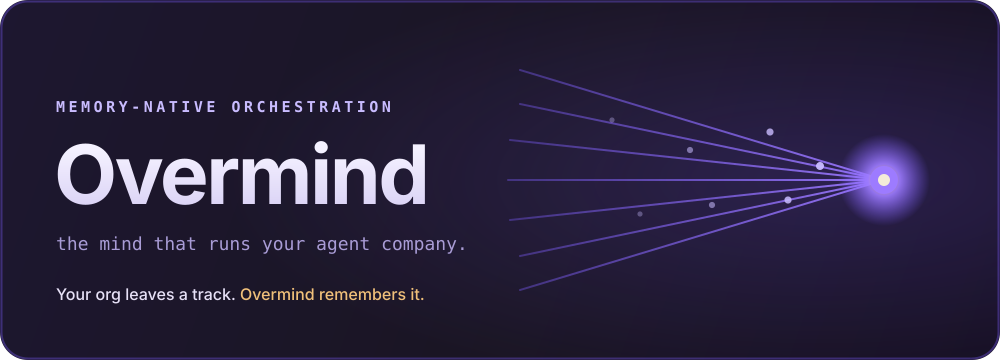
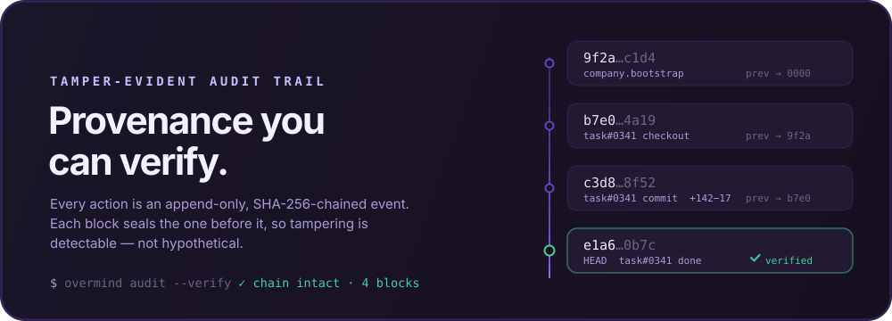
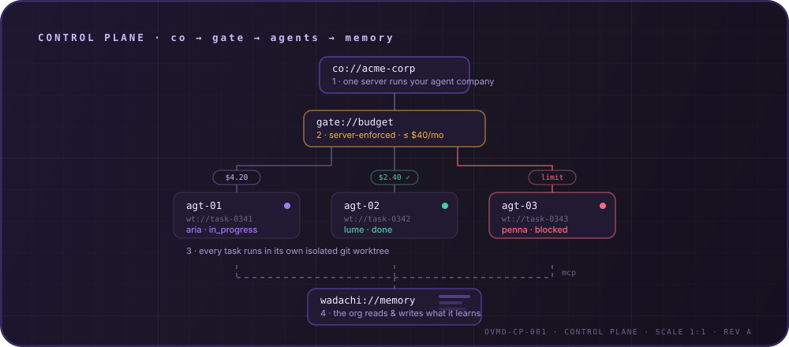

Memory-native orchestration
the mind that runs your agent company.
Your org leaves a track. Overmind remembers it.

If an agent is an employee, Overmind is the company — and it remembers. A Rust server and a React UI that organize AI agents into a company: org chart, budgets, governance, isolated git worktrees, and a tamper-evident audit trail.
The whole org shares a persistent brain — Wadachi (轍) — over MCP. Agents load past decisions, patterns, and fixes before working, and record what they learned. Nobody starts cold.
Every action is an append-only, SHA-256 hash-chained event, committed with the change it records. Tamper with history and GET /audit/verify pinpoints the exact broken block.
One server runs the company: atomic budgets enforced at checkout, one isolated git worktree per run, and approval gates that block until you sign off.
Everyone runs agents. Overmind can prove what every agent did — history is tamper-evident, not just logged.

The control plane, drawn to scale: one server runs your company, every action passes a server-enforced budget gate, every task runs in an isolated git worktree, and every agent reads and writes organizational memory over MCP.

Self-hosted, no account, your data on your machine.
# Docker (recommended) $ docker compose up --build # → http://localhost:7070 # Organizational memory (optional) — point at any MCP memory server $ OVERMIND_MEMORY_CMD="BRAIN_DIR=/path/to/brain wadachi" cargo run
Mount your repos and set OVERMIND_AGENT_CMD to your agent CLI — see the full quickstart. Memory unset? Overmind runs identically, memoryless.